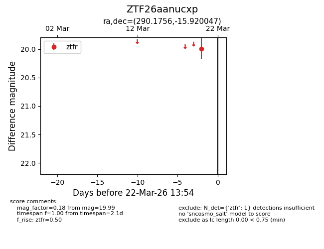
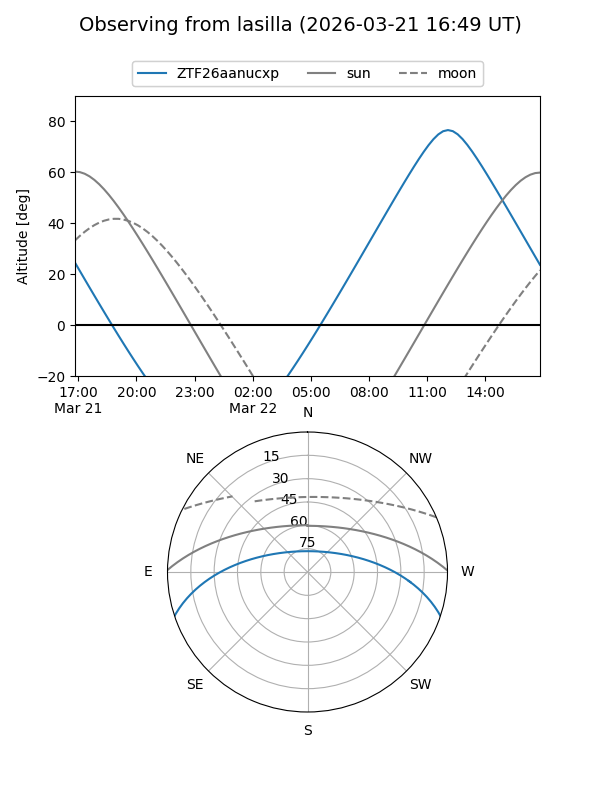
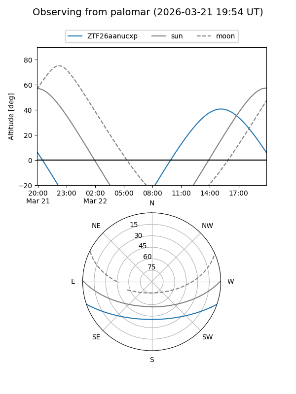

ZTF26aanucxp
Target ZTF26aanucxp at 2026-03-22 13:56
Aliases and brokers:
FINK: link
Lasair: link
ALeRCE: link
alt names
ZTF26aanucxp (ztf,fink_ztf)
Coordinates:
equatorial (ra, dec) = 290.1756,-15.92005
equatorial (HMS+DMS) = 19:20:42.14,-15:55:12.17
galactic (l, b) = (21.7655,-13.53631)
Flags:
Photometry:
last ztfr=19.99
1 ztfr detections
Lightcurve

Visibility


Additional plots